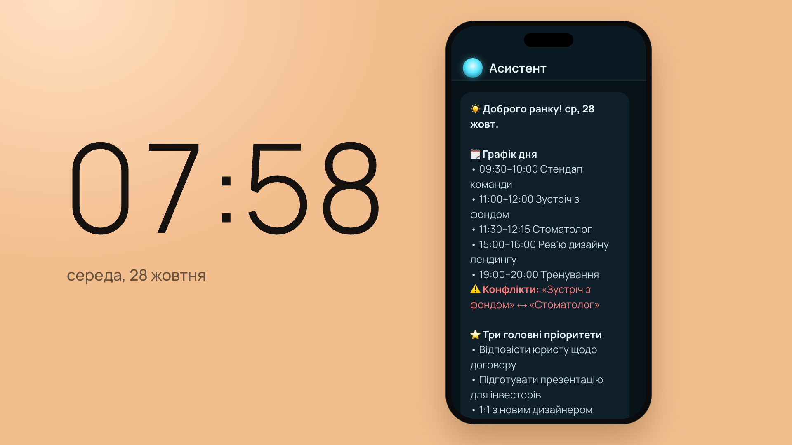
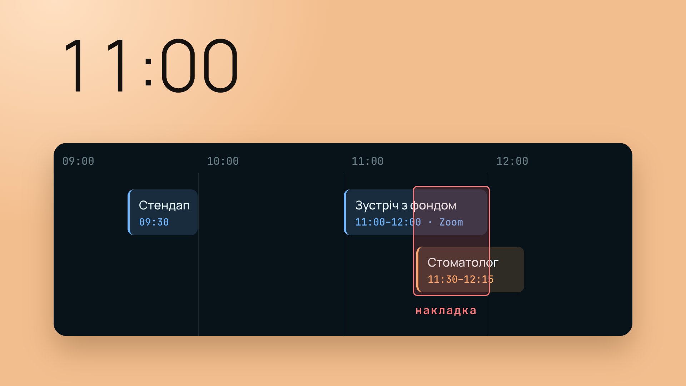
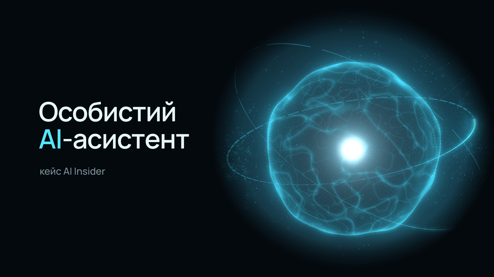
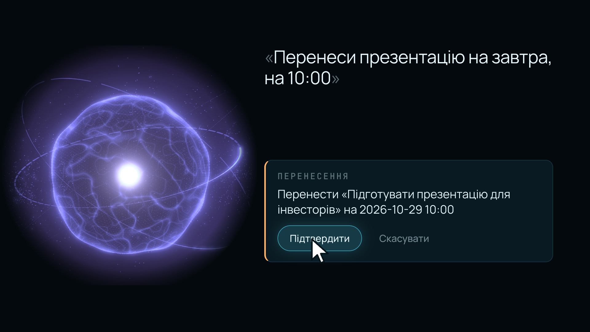
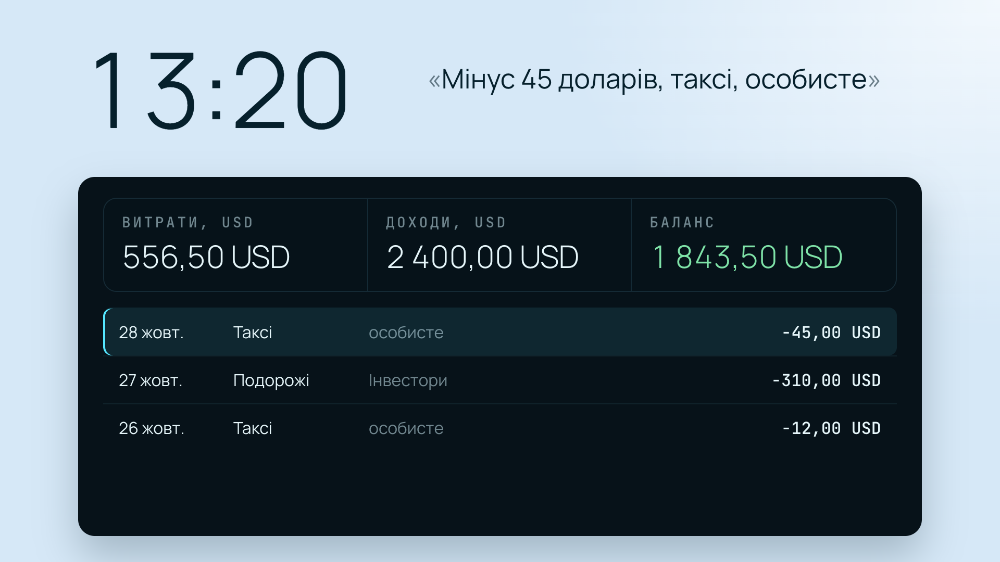
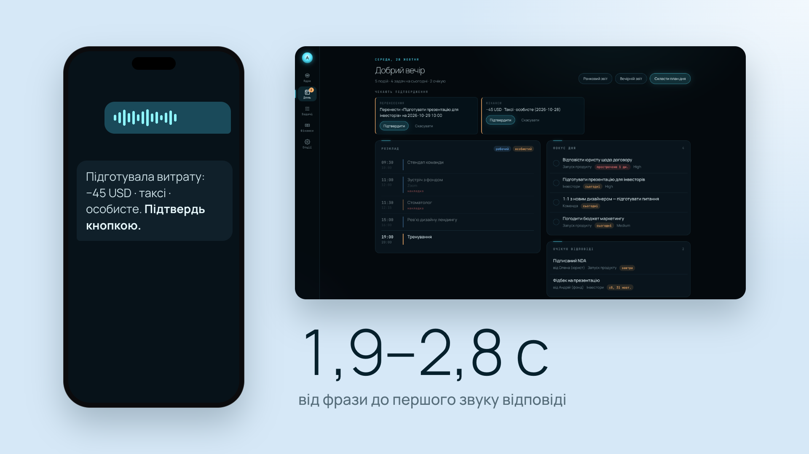
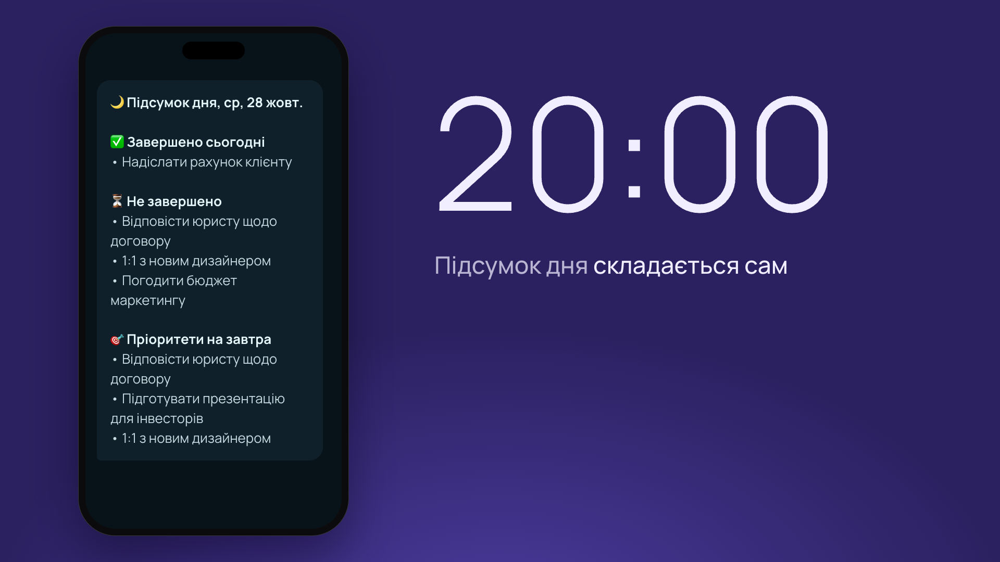
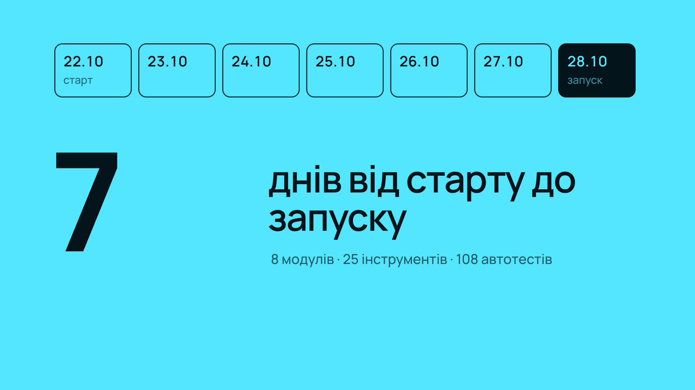
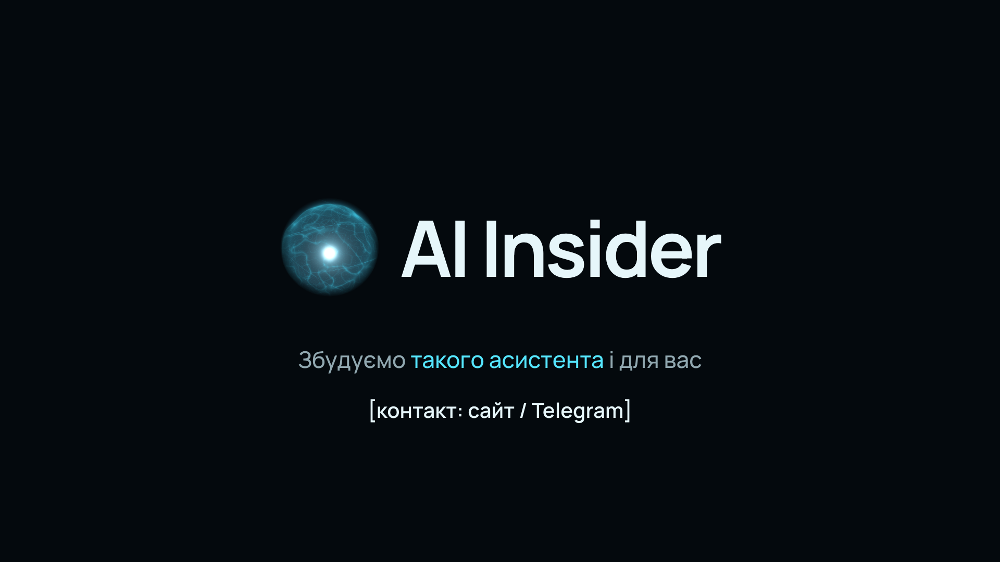

16:9 · ~60 с · голос Alex Bell (ElevenLabs) · музика ElevenLabs · кадри — пози ключових моментів, анімація після погодження

«Сьома п'ятдесят вісім.»
Годинник 07:58, на телефоні приходить справжній ранковий звіт бота. Камера пірнає в рядок «Конфлікти».
♪ бед входить; поп на сповіщенні

«П'ять зустрічей, два календарі — і накладка, яку вона ще не бачила.»
Рядки графіка вилітають з телефона у стрічку дня; «Зустріч з фондом» і «Стоматолог» наїжджають, перетин горить червоним.
♪ тиха пульсація; глухий удар на «накладка»

«Асистент побачив її першим. Особистий AI-асистент — від AI Insider.»
Червона точка розкривається у світ справжнього 3D-ядра з кабінету; титр по словах.
♪ перший підйом музики

«Вона просто каже вголос: перенеси презентацію на завтра, на десяту. Асистент готує дію — і нічого не змінює без її „так“.»
Ядро чує фразу (друкується), думає (фіолетове) і видихає справжню картку «Перенесення». Курсор тисне «Підтвердити» → «✅ перенесено».
♪ клік на «Підтвердити»

«Мінус сорок п'ять доларів, таксі. Запис уже у фінансах, а суму рахує код, не модель.»
Заливка кольором у денний світ, 13:20. Картка «Фінанси» влітає у вікно: рядок −45 стає першим, «Витрати» 511,50 → 556,50.
♪ вуш на перельоті; тік лічильника

«Telegram і веб-кабінет — один асистент, одна пам'ять. Голосом відповідає за дві-три секунди.»
Телефон із голосовим і справжній кабінет «День» поруч; приземляється «1,9–2,8 с».
♪ поп на цифрі

«Двадцята нуль-нуль. Підсумок дня вже готовий: що зроблено, що ні, і пріоритети на завтра.»
Заливка у вечір, годинник перегортається на 20:00; справжній вечірній звіт складається сам — найбільший момент.
♪ музика розкривається

«Вісім модулів. Двадцять п'ять інструментів. Сім днів від старту до запуску.»
Камера відлітає: день стає плиткою 28.10 серед 7 днів; цифри приземляються по одній на весь кадр (8 → 25 → 7).
♪ поп на кожній цифрі

«AI Insider. Збудуємо такого асистента і для вас.»
Плитка стискається в ядро, ядро — у знак; «AI Insider» витирається поруч; CTA тримається 2.5 с.
♪ імпакт; фейд музики